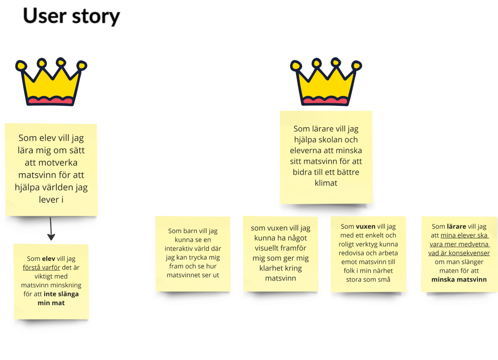
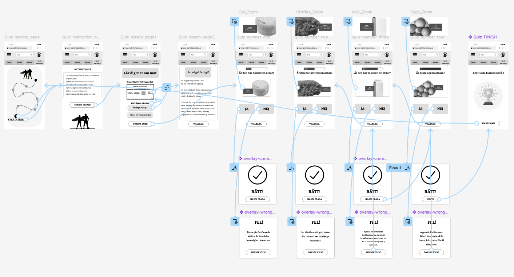
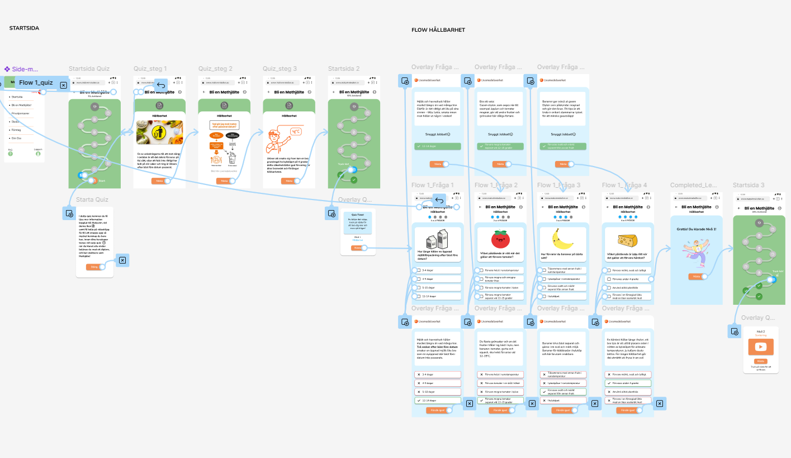

← Back to all projects

Matsvinskollen
A three week concept project exploring how gamification could increase awareness around food waste.
A three week concept project exploring how gamification could increase awareness around food waste.
Overview
Matsvinskollen started with a simple question. Can interactive learning change how people think about food waste?
Because the project only ran for three weeks, the goal was never to build a finished product. Instead, we focused on research, defining a clear and realistic problem, and building a prototype that allowed us to test one core idea.
The result was a quiz based mobile concept designed to make food waste knowledge feel practical and accessible rather than abstract.
Problem
Most people know food waste is a problem. What they often lack is practical understanding.
Through research we noticed that awareness was not the issue. The gap was knowledge.
People were unsure about how long food actually lasts, how to store it properly, and which daily decisions make a real difference.
Rather than trying to solve large systemic problems, we narrowed the scope. In three weeks we needed something we could realistically test. We chose to focus on awareness through interaction.

Process
The project ran over three weeks.
We began with research and conversations to understand different perspectives on food waste. From there we defined a problem that felt realistic within the timeframe.
My main contributions were research and synthesis, wireframing, high fidelity mobile design, and structuring the prototype in Figma so it stayed organized as we iterated.
The goal was not production readiness. The goal was insight. We wanted to see whether gamified quizzes could influence how users think about food in their daily lives.

Solution
We designed short quiz sessions built around relatable everyday scenarios. Each session ended with one practical tip connected to the questions.
The idea was simple. Small interactive moments can make abstract information feel personal.
The prototype allowed us to test clarity, engagement, and whether users felt more informed after interacting with it.
It was not a finished product. It was a concept meant to explore direction and potential.

Outcome
During testing, users reported feeling more confident about food storage and waste after completing the quizzes.
The most interesting result was not how many questions they answered, but how their language changed. They began talking about food waste in more practical terms rather than abstract ones.
For me, the biggest takeaway was about scope. In a short project, defining a focused problem and testing one strong idea was far more valuable than trying to build a complete solution.